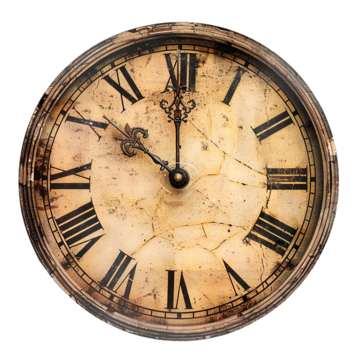
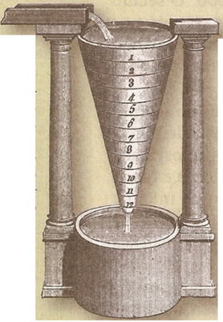
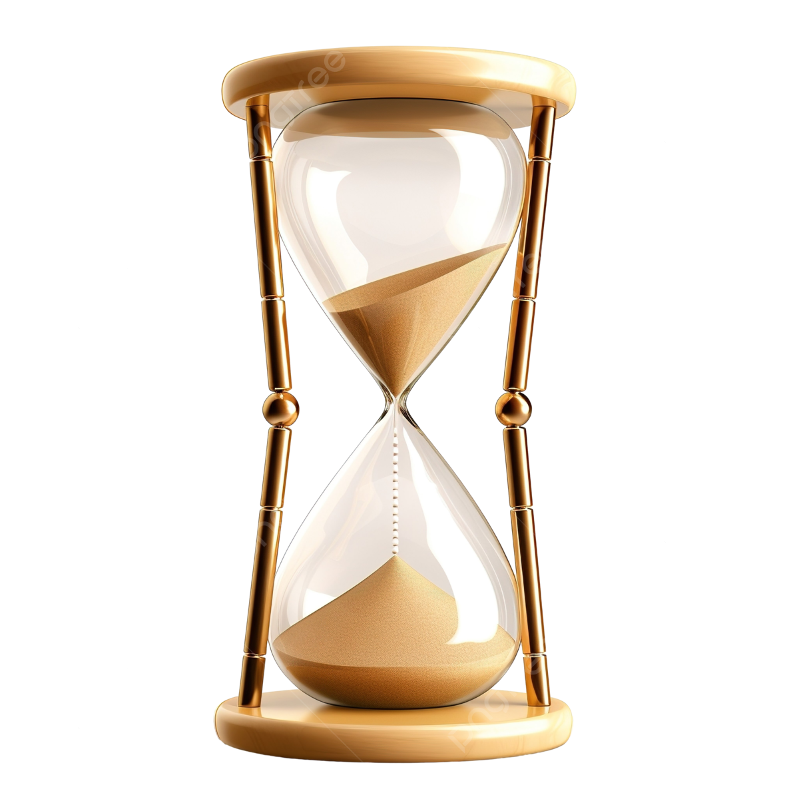

O relógio é um instrumento usado para medir o tempo. Estima-se que o homem começou a medir o tempo há cerca de 5000 anos, por uma vara fincada no chão, onde se observava o movimento das sombras, que eram projetadas no solo. Esse mecanismo não marcava as horas, apenas dividia o dia.
Com a necessidade de medidas mais precisas, surgiu a Clepsidra, ou relógio de água, e a ampulheta, ou relógio de areia. Esses se baseavam no tempo em que uma substância líquida ou sólida.
 